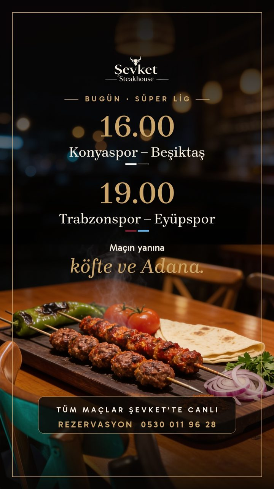

Hikâye


Açıklama
Bugün iki maç, tek adres. 16.00 Beşiktaş, 19.00 Trabzonspor. Maçın yanına köfte ve Adana. 🔥
Nasıl paylaşılır: Konum çıkartması + 16.00’ya geri sayım çıkartması. Müzik: hareketli, enstrümantal bir parça (Reels müzik kütüphanesinden “trending”).